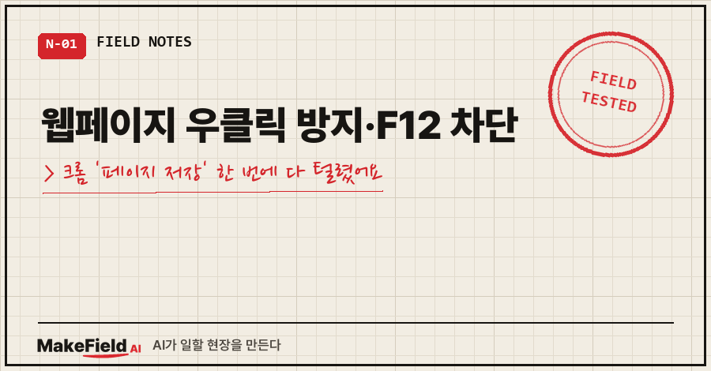
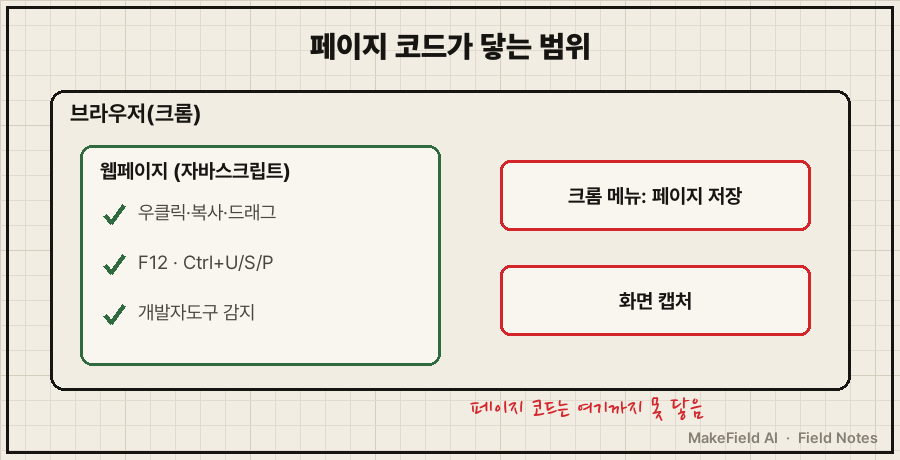
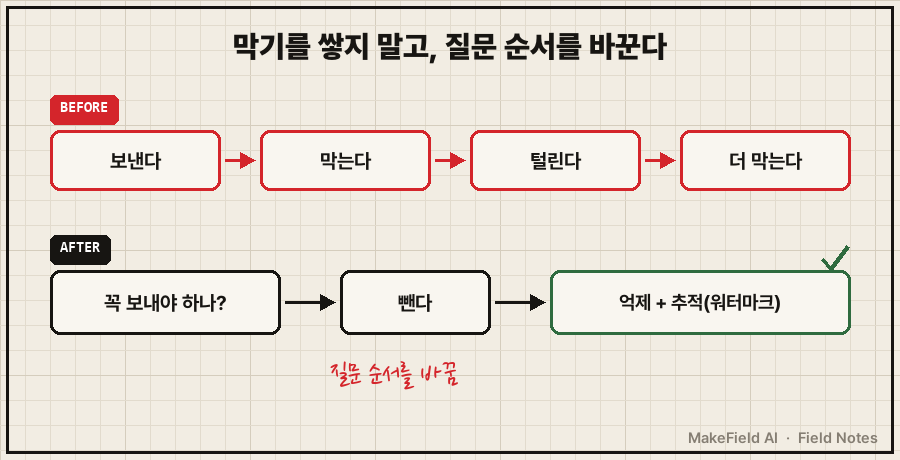

우클릭 막고, F12 막고, Ctrl+S까지 막았어요.
그런데 크롬 오른쪽 위 점 세 개 메뉴에서 '페이지 저장' 한 번 누르니까, 화면을 움직이는 코드까지 통째로 내 PC에 저장되더라고요.
먼저 답부터 드리면, 웹페이지 복사 방지 코드는 '억제'까지만 됩니다. 브라우저가 화면을 그리려면 파일을 받아야 하고, 받은 것은 결국 저장·캡처로 남아요. 막아야 할 내용이 있다면 차단 코드를 쌓기 전에 그 내용을 보내지 않는 쪽이 답이었습니다. 2026년 11월, AI랑 같이 며칠에 걸쳐 겪은 일이에요.
저는 제조 현장에서 제어·자동화를 15년째 만지는 엔지니어예요. 웹 개발자는 아니고요.
그래서 "퍼가기 막아 줘"를 AI한테 그대로 맡겼고, AI는 시킨 대로 정말 성실하게 막았습니다..
1. "퍼가기 막아 줘"에 AI가 막은 것들
일은 단순했어요. 3D 화면이 있는 HTML 교육용 시뮬레이터 파일 하나를 내부망에서만 보이게 올려 달라는 부탁이었죠.
제가 AI한테 건 조건은 이 한 줄이었습니다.
내부망에서만, 우클릭·F12·크롬으로 퍼가기 차단AI가 붙인 장치는 이랬어요.
- 내부망 밖에서 들어오면 403 거절
- 30초짜리 1회용 접속 토큰
- 우클릭·복사·드래그·선택·인쇄 차단
- F12, Ctrl+Shift+I/J/C, Ctrl+U/S/P 차단
- 개발자도구가 열리면 화면을 지움
- 접속 IP와 시각을 화면에 워터마크로
목록만 보면 빈틈이 없어 보이죠.
그래서 제가 직접 털어 봤어요. 단축키 말고, 크롬 메뉴에서 '전송·저장·공유 > 페이지 저장'.
전부 저장됐습니다.
2. 웹페이지 복사 방지 코드, 왜 '페이지 저장'은 못 막나요
브라우저 메뉴는 웹페이지 바깥에 있어서, 페이지 안의 자바스크립트가 가로챌 수 없어요. 단축키 Ctrl+S는 페이지가 먼저 받아서 막을 수 있지만, 크롬 메뉴는 브라우저가 직접 처리합니다.
AI는 한 번 더 막았어요. 화면이 뜨자마자 페이지 안의 <script>를 전부 지워서, 코드는 메모리에서만 돌게 했죠. 저장해서 열어 보면 3D도 동작도 없는 빈 껍데기가 됐어요.
그래도 제 판정은 "다운로드 받아지고 로직도 다 확인된다"였습니다. 글자·질문답변·사진은 저장본에 그대로 남았고, 화면을 그리는 계산은 어쨌든 제 PC 안에서 돌고 있었으니까요.
사실 AI 작업 기록에는 처음부터 이렇게 적혀 있었어요.
한계: 브라우저로 전달된 자료는 기술적으로 완전 차단 불가
(화면 캡처·브라우저 메뉴 개발자도구 등). 억제+추적 수준저는 이 줄을 읽고도 "그럼 더 세게 막자"로 갔습니다.

3. 로직을 서버로 옮기는 데 한 시간, 폐기는 같은 날
다음 수는 핵심 계산을 아예 브라우저에서 빼는 거였어요.
시뮬레이터의 핵심 모델 코드(약 35KB)를 서버에서 그대로 돌리고, 브라우저에는 계산 없이 결과만 주고받는 대리 객체를 보냈습니다. 화면 프레임 하나당 서버 왕복이 약 1.2번이었어요.
검증도 꼼꼼했어요.
| 검증 항목 | 규모 | 결과 |
|---|---|---|
| 원본 계산 vs 서버 계산 | 7.4만 단계(무작위 시드 14개) | 불일치 0 |
| 화면 비교 | 6개 화면·122개 조작·257단계 | 화면 글자·상태 차이 0 |
| 서버 부담 | 사용자 1명·프레임 1개 | 0.08ms, 응답 1.3KB |
한 시간 남짓 걸려서 "기능 100% 동일, 브라우저엔 로직 0줄"까지 갔어요.
그리고 그날 제가 폐기했습니다. 괜히 내 개발용 서버에 부담 주지 말자, 다른 데서 다르게 하겠다고요.
서비스·파일·설치한 도구 전부 지웠고, 포트와 프로세스가 0인 것까지 확인했어요. 만든 소스는 기록용으로만 남겼고요.
4. 진짜 해결은 '빼고 다시 만든 파일'이었어요
다음 날 자료를 만든 쪽에서 새 판을 보내왔어요. 지켜야 할 핵심 계산을 뺀 교육용 모형으로 다시 만든 파일이었고, 안내문에는 이렇게 적혀 있었습니다.
Node·API 불필요, 교육용 JS 열람 가능지킬 게 파일에서 빠지니 서버 분리가 필요 없어졌어요. 그냥 정적 파일로 올렸습니다.
대신 제가 "로직은 패스하고 우클릭 방지라던가 퍼갈 수 없게 좀 할 수 있는 기본 장치만 이전처럼"이라고 해서, 첫날 붙였던 장치(토큰·차단·<script> 지우기·워터마크)는 다시 얹었어요.
정리하면 이렇습니다.
| 방법 | 막는 것 | 못 막는 것 | 비용 |
|---|---|---|---|
| 우클릭·F12·단축키 차단 | 가볍게 퍼가는 사람 | 브라우저 메뉴 저장·캡처 | 거의 없음 |
<script> 지우기 | 저장본 속 코드 | 글자·사진, 실행 중 메모리 | 거의 없음 |
| 로직 서버 분리 | 계산 코드 노출 | 화면에 보이는 결과 | 서버 상시 부담 |
| 내용 빼고 다시 만들기 | 지킬 게 애초에 없음 | — | 작성자 손 한 번 |

5. 이번 일로 바꾼 순서
AI는 틀린 걸 만든 게 아니었어요. 시킨 걸 완벽하게 만들었고, 한계도 처음부터 적어 뒀죠.
틀린 건 제 질문 순서였습니다. "어떻게 막지?"부터 물었으니, AI는 막는 방법을 계속 쌓았던 거예요. 공개 약점 분류에도 아예 'CWE-602, Client-Side Enforcement of Server-Side Security(서버가 지켜야 할 보안을 브라우저 쪽에서 지키려는 실수)'라는 항목이 있더라고요.
그래서 지금은 순서를 이렇게 바꿨어요.
- 이 내용을 꼭 브라우저로 보내야 하나 — 아니면 빼고 만든다
- 보내야 한다면, 막을 대상은 '가볍게 퍼가는 사람'까지로 정한다
- 남길 장치는 억제(기본 차단)와 추적(워터마크·기록) 두 개
후일담 하나만 덧붙이면, 나중에 담당자가 직접 새 파일을 올리는 기능을 붙일 때는 서버에 AI가 있어도 일부러 안 끼웠어요. 정해진 절차라 코드가 매번 똑같이 처리하는 게 맞았고, 올라온 파일을 AI가 읽으면 그 안의 글이 AI에게 내리는 지시로 둔갑하는 프롬프트 주입 위험이 있었거든요. 자동 시험 31개를 다 통과했고, 담당자 쪽에서 "잘된다고 하네"라는 답이 왔습니다.
이런 질문이 남을 수 있어요
Q. 그럼 우클릭 방지는 쓸모없는 건가요?
아니에요. 무심코 복사해 가는 사람은 확실히 줄어요. 다만 그게 전부라는 걸 알고 쓰는 거죠. 저도 결국 기본 장치는 다시 붙였습니다.
Q. 워터마크는 왜 남겼나요?
캡처는 못 막으니, 캡처된 화면에 '누가 언제 봤는지'가 찍히게 한 거예요. 막는 장치가 아니라 남기는 장치입니다.
Q. AI한테 처음부터 어떻게 물었으면 됐을까요?
"막아 줘" 전에 "이걸 브라우저로 안 보내고 같은 교육 효과를 낼 수 있나?"를 먼저 물었으면, 한 시간짜리 서버 작업은 안 했을 거예요.
여러분은 웹에 올린 자료 중에 '막아 달라'는 요청을 받아 본 게 있으신가요? 그 자료에서 정말 지켜야 할 게 뭔지부터 한 줄로 적어 보세요. 그 줄이 비어 있으면, 차단 코드도 필요 없을 수 있어요.
AI한테 일을 맡길 때 질문 순서를 어떻게 잡는지, 제가 겪고 고친 기록은 makefield.ai에서 이어 보실 수 있어요.
참고
- MITRE CWE-602: Client-Side Enforcement of Server-Side Security → https://cwe.mitre.org/data/definitions/602
- 실측: 2026년 11월 개인 작업 기록(차단 장치 목록·검증 수치·폐기 결정, 제품·서버 정보 제외)
태그: #웹페이지복사방지 #우클릭방지 #F12차단 #크롬페이지저장 #소스코드보호 #자바스크립트보호 #HTML보호 #드래그방지 #워터마크 #내부망게시 #클라이언트보안 #CWE602 #AI코딩 #AI오답노트 #MakeFieldAI